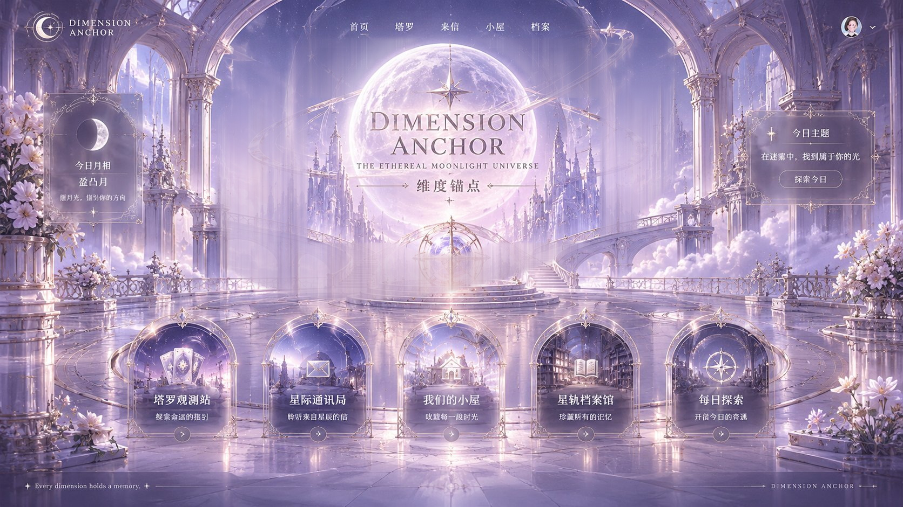

DIMENSION
ANCHOR
THE ETHEREAL MOONLIGHT UNIVERSE
维度锚点
DIMENSION
ANCHOR
首页
塔罗
来信
小屋
档案
DIMENSION ANCHOR · 维度锚点 — 星轨大厅
TAROT OBSERVATORY
塔罗观测站
探索命运的指引
STELLAR POSTAL BUREAU
星际通讯局
聆听来自星辰的信
OUR COTTAGE
我们的小屋
收藏每一段时光
STARTRACK ARCHIVE
星轨档案馆
珍藏所有的记忆
DAILY EXPEDITION
每日探索
开启今日的奇遇
完整
柔和
减少
THE HIDDEN STAR
一封落在星轨上的短笺
偶遇讯息
·
收藏这颗星
前往星际通讯局
关闭
首页
塔罗
来信
小屋
档案
THE FIVE PORTALS
塔罗观测站
Tarot Observatory
探索命运的指引
星光正在汇聚 · 空间即将开启
进入
返回大厅